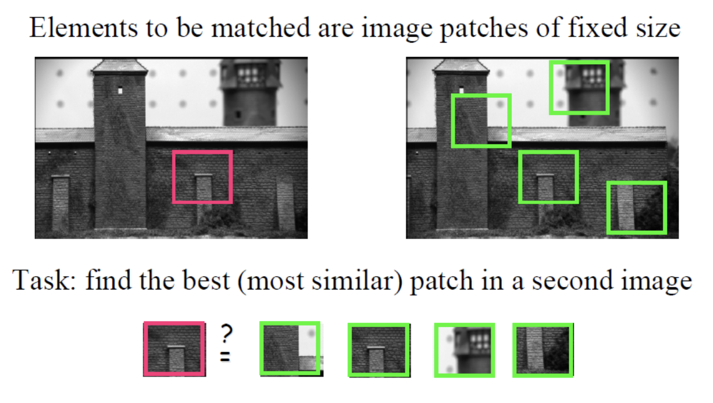
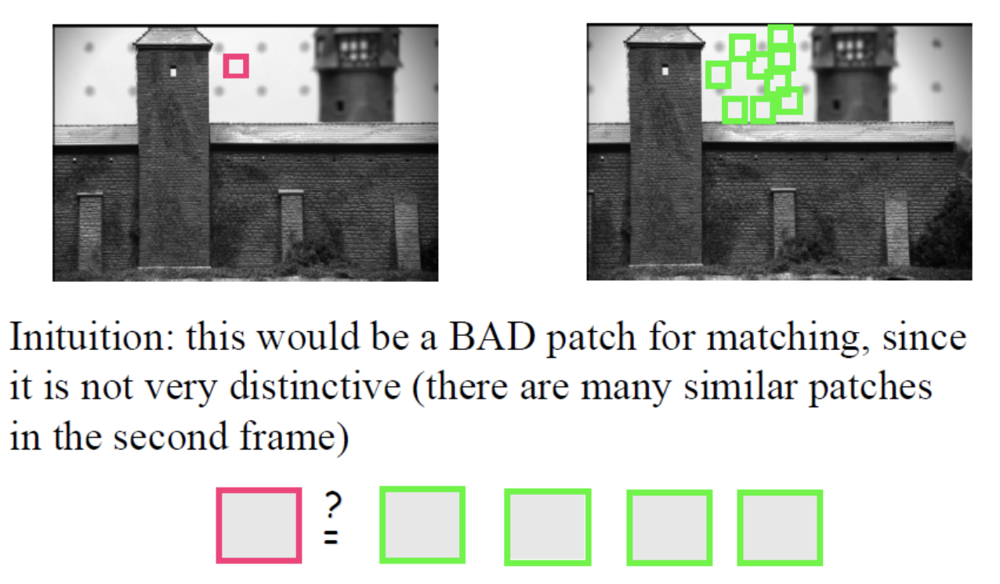
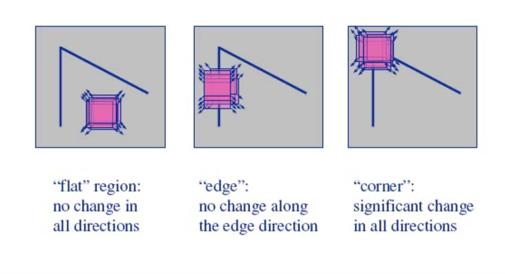
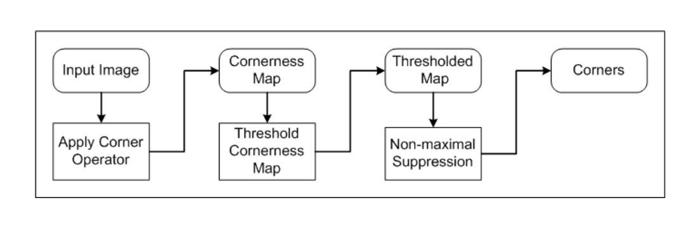
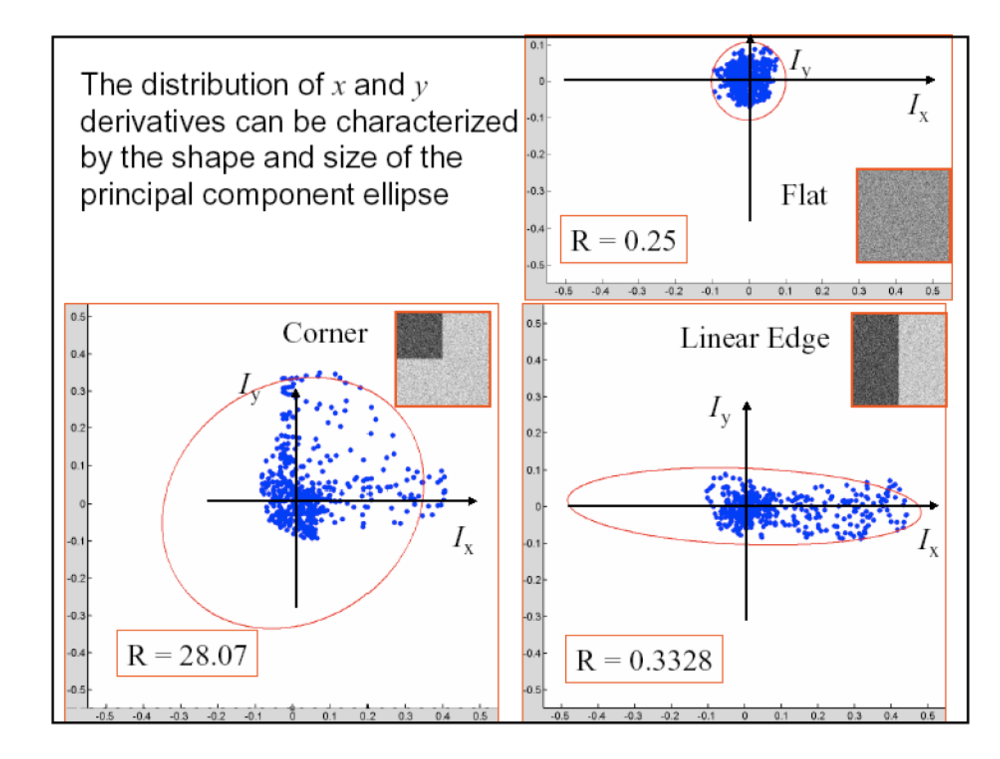
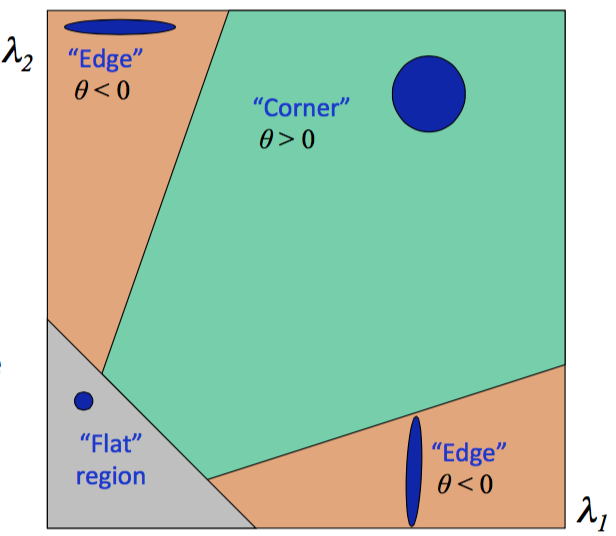
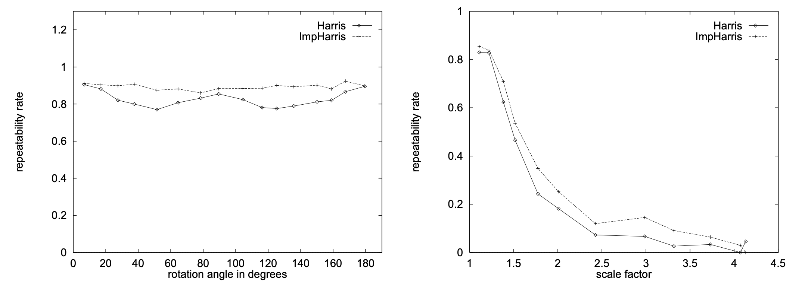
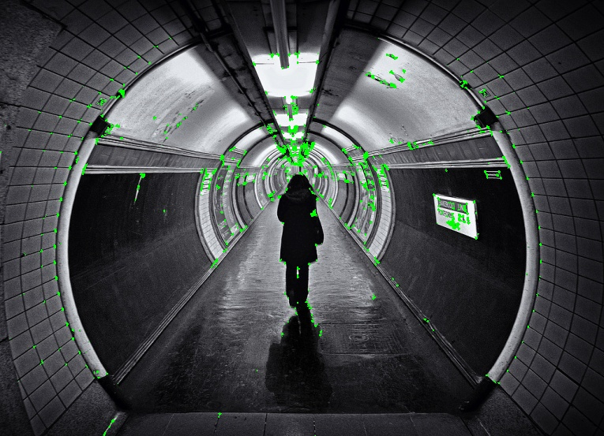

In this series of posts, with the foundation of image processing, we will look at some key ideas in Computer Vision. One important progress in CV is the corner detector. Recall from Computer Vision Foundation -> Image Processing6: Edge Detection, previously we were able to find edges. However, interest-point detector is more critical. The interest-point can be used as an indicator to find the same object or position in two different images.
This post is split into four sections:
- The Basic Principles of Harris Corner Detector
- Practice with OpenCV in Python
- Compute Harris Corner Detector From Scratch
Source code: https://github.com/BillMaZengou/cv_basis -> harris.py (OpenCV)
The Basic Principles of Harris Corner Detector
Originally, when people wanted to do some operations across multiple images, they would do patch matching, which meant that they needed to compare a portion of the image with anywhere else and compute the similarity. As shown in the picture below, computer needs to compare each patch and calculates the correlation.

However, this approach is not robust. Consider the example below, it is hard to tell which section of the sky is the same as our target as the sky looks identical.

This should give us an insight that using patch detection through the whole image is not a reliable way to find the same position between multiple images. Moreover, only the distinct features should be considered.
The interest points are the local features that associated with a significant change of an image property or several properties simultaneously (e.g. intensity, colour, texture).
Six properties of good features
- Local: features are local, robust to occlusion and clutter. (i.e. no prior segmentation required)
- Accurate: precise localisation.
- Invariant (or covariant)
- Robust: noise, blur, compression, etc. do not have a big impact on the feature.
- Distinctive: individual features can be matched to a large database of objects.
- Efficient: close to real-time performance.
The properties 3. and 4. make the detector repeatable across multiple images.
Therefore, a natural selection of our interest points is the corners. Corners are locations where variations of intensity function \(f(x, y)\) in both \(x\) and \(y\) directions are high. (i.e. the partial derivatives of \(f(x, y)\) with respect to \(x\) and \(y\) are large)
On the contrast, for an edge, the partial derivative is large in only a certain direction; for a flat surface, the partial derivatives are small in both directions.
Harris corner detector uses these properties. Consider a small window (a kernel) on each pixel, and compute the partial derivatives by moving the kernel.

The Algorithm

- For each pixel in the input image, the corner operator is applied to obtain a cornerness measure for this pixel.
- Threshold cornerness map to eliminate weak corners.
- Apply non-maximal suppression to eliminate points whose cornerness measure is not larger than the cornerness values of all points within a certain distance.
Mathematically, the change of intensity for the shift \([u, v]\) can be expressed as
\[
E(u, v) = \sum_{x, y} w(x, y) [I(x+u, y+v) - I(x, y)]^2
\]
where \(w(x, y)\) is the window function and \(I(x, y)\) is the intensity function. The element in the window function can all be \(1\) or Gaussian distributed.
To simplify the equation and ease our computational costs, we can use first-order Taylor expansion on the square term.
\[
I(x+u, y+v) \approx I(x, y) +
\begin{bmatrix}
\frac{\partial I}{\partial x} & \frac{\partial I}{\partial y}
\end{bmatrix}
\begin{bmatrix}
u\\
v
\end{bmatrix}
\]
Thus, the square term can be considered as
\[
(\begin{bmatrix}
\frac{\partial I}{\partial x} & \frac{\partial I}{\partial y}
\end{bmatrix}
\begin{bmatrix}
u\\
v
\end{bmatrix})^2
\]
using a matrix identity: \(\mathbf{u}^2 = \mathbf{u}^{T}\mathbf{u}\), it becomes
\[
\begin{bmatrix}
u & v
\end{bmatrix}
\begin{bmatrix}
\frac{\partial I}{\partial x} \\ \frac{\partial I}{\partial y}
\end{bmatrix}
\begin{bmatrix}
\frac{\partial I}{\partial x} & \frac{\partial I}{\partial y}
\end{bmatrix}
\begin{bmatrix}
u\\
v
\end{bmatrix}
\]
Therefore,
\[
E(u, v) \approx
\begin{bmatrix}
u & v
\end{bmatrix}
\mathbf{M}
\begin{bmatrix}
u\\
v
\end{bmatrix}
\]
where
\[
\mathbf{M} = \sum_{x, y} w(x, y)
\begin{bmatrix}
\frac{\partial^2 I}{\partial x^2} & \frac{\partial^2 I}{\partial x \partial y} \\
\frac{\partial^2 I}{\partial x \partial y} & \frac{\partial^2 I}{\partial y^2}
\end{bmatrix}
\]
Diagonalising the matrix \(\mathbf{M}\) gives us
\[
\mathbf{M} = \mathbf{P}^{-1}
\begin{bmatrix}
\lambda_1 & 0 \\
0 & \lambda_2
\end{bmatrix}
\mathbf{P}
\]
where \(\lambda_1\) and \(\lambda_2\) are the eigenvalues of \(\mathbf{M}\)
Then \(\lambda_1\) and \(\lambda_2\) can be used to compute a score, \(R\) such that
\[
R = det(\mathbf{M}) - k(trace(\mathbf{M}))^2 = \lambda_1 \lambda_2 - k (\lambda_1+\lambda_2)^2
\]
where \(k\) is a tunable sensitivity parameter. Empirically, it is around \(0.04-0.06\).
Different \(R\) values can categorise a feature into flat surfaces, edges and corners.

Normally, it follows this pattern.

The properties of Harris Corner Detector were studied.

It is clear that Harris is invariant under the rotation but not invariant after scaling up.
Practice with OpenCV in Python
Documentation
In OpenCV, we can use cv2.cornerHarris to implement a Harris corner detector.
dst = cv2.cornerHarris(src, blockSize, ksize, k, borderType=BORDER_DEFAULT)
src -> (compulsory) Input single-channel 8-bit or floating-point image.
dst -> Image to store the Harris detector responses.
blockSize -> (compulsory) Neighbourhood size.
ksize -> (compulsory) Aperture parameter for the Sobel operator. For more information about the Sobel operator, check Computer Vision Foundation -> Image Processing6: Edge Detection.
k -> (compulsory) Harris detector free parameter.
borderType -> (optional) Pixel extrapolation method. BORDER_WRAP is not supported. The default option is BORDER_DEFAULT.
Note In OpenCV, borderType
\[
\begin{center}
\begin{tabular}{ |c|c| }
\hline
cv.BORDER_CONSTANT & iiiiii|abcdefgh|iiiiiii with a specific i \
cv.BORDER_REPLICATE & aaaaaa|abcdefgh|hhhhhhh \
cv.BORDER_REFLECT & fedcba|abcdefgh|hgfedcb \
cv.BORDER_WRAP & cdefgh|abcdefgh|abcdefg \
cv.BORDER_REFLECT_101 & gfedcb|abcdefgh|gfedcba \
cv.BORDER_TRANSPARENT & uvwxyz|abcdefgh|ijklmno \
\hline
\end{tabular}
\end{center}
\]
cv.BORDER_DEFAULT is as the same as cv.BORDER_REFLECT_101.
Implementation
import cv2
# detector parameters
block_size = 3
sobel_size = 3
k = 0.06
name = image_name
img = cv2.imread('./{}.jpg'.format(name), cv2.IMREAD_UNCHANGED)
img = cv2.cvtColor(img, cv2.COLOR_BGR2GRAY)
# modify the data type setting to 32-bit floating point
img = np.float32(img)
# detect the corners with appropriate values as input parameters
corners_img = cv2.cornerHarris(img, block_size, sobel_size, k)
#result is dilated for marking the corners, not important
dst = cv2.dilate(dst, None)
# Threshold for an optimal value, marking the corners in Green
image[corners_img>0.01*dst.max()] = [0,255,0]
cv2.imshow('Harris Corner Detector',image)
cv2.waitKey(0)
cv2.destroyAllWindows()
Example results are shown below:
Original image
Interest Points

Note More details about cv2.dilate, please conduct https://opencv-python-tutroals.readthedocs.io/en/latest/py_tutorials/py_imgproc/py_morphological_ops/py_morphological_ops.html
Compute Harris Corner Detector From Scratch (TODO)
Acknowledgement
The creation of this post is inspired by Datawhale.
Reference
- Cse.psu.edu. 2020. [online] Available at: http://www.cse.psu.edu/~rtc12/CSE486/lecture06.pdf [Accessed 23 June 2020].
-
- [online] Available at: https://zhuanlan.zhihu.com/p/83064609 [Accessed 23 June 2020].
- Docs.opencv.org. 2020. Opencv: Harris Corner Detection. [online] Available at: https://docs.opencv.org/3.4/dc/d0d/tutorial_py_features_harris.html [Accessed 23 June 2020].
- Opencv-python-tutroals.readthedocs.io. 2020. Harris Corner Detection — Opencv-Python Tutorials 1 Documentation. [online] Available at: https://opencv-python-tutroals.readthedocs.io/en/latest/py_tutorials/py_feature2d/py_features_harris/py_features_harris.html [Accessed 23 June 2020].
- Schmid, C., Mohr, R. and Bauckhage, C., 2000. Evaluation of interest point detectors. International Journal of computer vision, 37(2), pp.151-172.
本博客所有文章除特别声明外，均采用 CC BY-SA 3.0协议 。转载请注明出处！